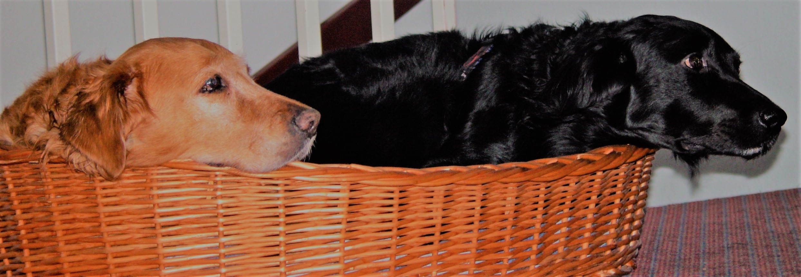

Wir leben auf diesem kleinen ehemaligen Burgwall bei Halle direkt an der Saale. Schon in der Kindheit habe ich mir mit meiner Schwester einen Hund „erkämpft“. Unsere geliebte Trixi, ein schwarzer Kleinspitz, der uns bis ins Erwachsenenalter begleitete. Es folgte Chayan, ein Tibetterrier, mit dem meine Tochter in ihrer Kindheit tobte. Als diese 14 Jahre alt wurde und wir aus Halle ins Umland zogen, erfüllten wir uns den Wunsch nach einem GOLDEN- unsere heißgeliebte Chiara (aus der Arbeitslinie) kam Weihnachten 1996 in unser Leben und machte uns 15 Jahre glücklich, vor allem auch in den Jahren ab 2004, als sie und ihr Sohn Adam mit uns zusammen lebten. Nach dem uns dieser tolle Hund ebenfalls nach 15 Jahren verlassen musste, folgten einige wenige Monate ohne Familienhund – welch leeres freudloses Leben! Deshalb waren wir überglücklich aus Frau Brügmanns Zucht die Erstgeborene ihrer Hündin Amy zu erhalten. Endlich war wieder Bewegung im Haus- und wie!
Cheyenne kann sehr wild sein, wenn sie mit Kindern und Hunden tobt, aber ruht trotzdem immer in sich. Sie ist sehr sicher, feinfühlig und leicht führig. Sie will es „ihren“ Menschen recht machen und gibt’s sich Mühe beim Training die Aufgaben zu lösen. Sie fordert regelrecht Arbeit, wenn wir es abends mal vergessen, wirft sie sich selbst den Ball. Sie ist belastbar, kontaktfreudig und freundlich, wie es jeder GOLDEN ist oder sein sollte. Cheyenne ist zwar eine vorsichtige Hündin, aber absolut schussfest und ohne jegliche Ängste. Sie ist eine sehr gute Beobachterin, was ihr in der Dummiearbeit zu Gute kommt.
Die lange Zeit der Pandemie haben wir genutzt, um Cheyennes Gesundheit, Wesen und Aussehen im GRC begutachten zu lassen, sowie, sie verstärkt auszubilden und Prüfungen zu absolvieren. Auch ein Züchterseminar habe ich besucht und viele weitere Formalitäten, die die Zuchtverbände erwarten, so dass wir Mitte 2021 und nochmals im Frühjahr 2022 versucht haben, Welpen von ihr zu bekommen. Leider ist Cheyenne leer geblieben und so genießt sie „kinderlos“ ihr tolles Hundeleben. Allerdings war ab Februar 2024 „teilen“ angesagt - wir haben aus Bettina Krists erfolgreichen Zucht einen Welpen namens Tara bekommen, der Yenni anfangs sehr nervte und bis heute von ihr keine Grenzen gesetzt bekommt. Dafür macht sie uns Menschen verantwortlich und fordert bei uns ihre Rechte ein. Wir erziehen diese energiegeladene , körperliche junge Hündin gern. Tara ist sehr sportlich für einen Golden und jederzeit wild auf Arbeiten, Aufgaben und Action. Geduld ist ihre größte Herausforderung, an der wir beständig üben. Sehr gut hat sie alle Prüfungen, Ausstellungen und Gesundheitschecks bestanden und ein hoffentlich passender Rüde ist mit Yannik gefunden. Wir warten auf Taras nächste Läufigkeit im August und sind uns sicher, dass die tollen Elterneigenschaften auch beim Nachwuchs zu finden sind und dass diese GOLDEN weitere Menschen glücklich machen werden!
Marion Mehlis